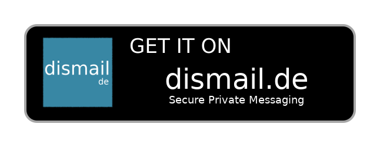

JMP gives you a real phone number for sending picture and text messages right from a Jabber account.
Join our low-volume notification list for updates.
Step 1: Get a Jabber ID (JID)

Step 2: Get a Jabber client
Step 3: Get a JMP number
Or search by area code to find even more numbers.
You can also bring your own number to JMP if you like.
Note: While JMP does provide phone numbers and voice/SMS features, JMP is not a telephone company and it does not provide 911, 112, 999 or other emergency services over voice or SMS. Please ensure that your existing telephony provider supports those services.
If you've signed up for the free trial and would like to upgrade to unlimited text and picture message for the duration of the beta period, you can upgrade to a paid account here. JMP is currently available for US$2.99 per month or US$34.99 per year.
JMP gives you a Canadian or US phone number that is yours to keep (for 46 other countries you can use the the Vonage SGX, also part of Soprani.ca). JMP allows you to send and receive text messages and picture messages using your Jabber client, with calls delivered to voicemail (including a text transcription) by default.
If you like, you can make and receive phone calls using your SIP client (or receive with an existing Canadian or US phone number, or iNum). You can configure a voicemail timeout if you'd like JMP to automatically handle any calls that ring for too long.
XMPP (formerly Jabber) is a federated protocol and open standard for messaging. It uses Jabber IDs (JIDs) to communicate, which are similar to email addresses. As with email, you can get a Jabber ID from one of many free and open servers.
And just like email, there are many different Jabber clients available, so you can use Jabber from your phone (Conversations and Siskin IM are our recommended apps), the web, and your computer.
Jabber is long-standing, widely-used, and privacy-focused. If you have ever used Google Chat, HipChat, the pre-2016 Facebook Messenger, WhatsApp, Kik, Movim, Android Push Notifications, or a private company chat server, then you have used XMPP.
JMP extends the freedom of Jabber and the XMPP network to cell phone texting.
Text messages are sent and received using special Jabber IDs (JIDs). To send a text message, first add the JID representing the destination phone number to your roster. For example, to send a text message to +1 416 993 8000 you would add "+14169938000@cheogram.com" to your roster. You can then send the contact a message or picture and they will receive it as an SMS/MMS message.
To send text messages to short codes, use the special suffix for short codes, ie. "33733;phone-context=ca-us.phone-context.soprani.ca@cheogram.com" represents the 33733 short code. This will be simplified in the future, but is required for now in order to maintain proper uniqueness going forward.
JMP is completely free of charge for the first 30 days! During this trial period you can send up to 300 text or pictures messages and use up to 30 minutes of voice calls. And you can receive as many text and picture messages as you like. To see how many minutes and messages you've used, follow these instructions.
At any time within the first 30 days you can upgrade to a paid account to send and receive unlimited text and picture messages, as well as use up to 120 minutes of voice calls per month. JMP is currently in beta - the introductory rate for beta users is US$2.99 per month (or US$34.99 per year).
Once the beta period for JMP is over, the US$2.99/month and US$34.99/year subscriptions will still be available and will still have unlimited incoming SMS and MMS, but the number of outgoing SMS/MMS will be limited; other plans will be available.
You may cancel your subscription at any time (via PayPal or by contacting the support team). After cancellation (or after your trial period expires), your number will be reclaimed after 30 days unless you port it to another carrier.
The beta period will last until at least December 2020, and a new unlimited messaging plan will be made available once the beta period has ended. After the beta period, additional non-PayPal methods of payment will be made available.
The best venue for help using or developing features for JMP is the Soprani.ca chatroom, which you can join from your chat client or on the web. It is an active and enthusiastic channel, and the fastest way to solve problems with the developers or other users.
If you'd like to send a private inquiry instead, or if you cannot join the chatroom, send a text message to the support team at +1 416 993 8000 (Canada) or +1 312 796 8000 (US) and we will get back to you within 24 hours. Both numbers can be texted from most other countries, though your carrier may charge a fee for international text messaging.
If you have found a bug in JMP, please file an issue at https://gitlab.com/ossguy/sgx-catapult/issues .
All of the software that makes up JMP is free and open source software. You can view, download, and modify the source code here.
For news about JMP, you can signup for our low-volume notification list here. You can also follow us on Twitter.
JMP supports the following text messaging features:
JMP does not (yet) support these features:
Login to the SIP account that was provided during the signup process using a SIP client (we recommend CSipSimple for Android and Linphone for iOS). Then enter the 10-digit phone number that you'd like to call. Currently JMP supports calling to Canada and the US.
If you don't have your SIP account information, you can reset your SIP account and receive the new password and other details using an XMPP ad-hoc command. For example, you can do this on a computer using your JID in Movim and then clicking on cheogram.com in your contacts. Under Actions, you can then choose "Reset SIP Account (if forgot password)". The next page will show you your new SIP password as well as the SIP username and domain you can use to login.
Calls will be delivered to voicemail if your SIP account (or forwarding number) is busy or not logged in. Voicemails will be sent as messages to your XMPP client, both as an audio file as soon as the voicemail is left, and also as transcribed text once our transcription engine has finished converting the audio to text for you (normally this takes just a few seconds).
If SIP or forwarding is setup, you can configure calls to be sent to voicemail after a certain number of rings by using an XMPP ad-hoc command, which is done (ie. on a computer, using your JID in Movim) by clicking on cheogram.com in your contacts. Under Actions, you can then choose to either "Configure Calls" (set the seconds until voicemail - a ring is about 5 seconds and "-1" means unlimited rings) or "Record Voicemail Greeting" (see below).
The default voicemail greeting is: "You have reached the voicemail of a user of JMP.chat. Please send a text message, or leave a message after the tone." If your XMPP user has a vCard with FN or NICKNAME specified, then JMP will use that instead of "a user of JMP.chat" in your voicemail greeting. You can also set your own voicemail greeting using the "Record Voicemail Greeting" ad-hoc command (see above), which will call your SIP account (or forwarding number) to record the greeting.
No. Other payment methods are available. For details, please contact our support team by sending a text message to +1 416 993 8000 (Canada) or +1 312 796 8000 (US) or send a private message to "ossguy" in the JMP/Soprani.ca chatroom at discuss@conference.soprani.ca .
Yes! We support most regions in Canada and the US. The process normally takes 1-2 weeks, depending on the number being ported in. You can submit your port request here. For questions, please reach our support team by sending a text message to +1 416 993 8000 (Canada) or +1 312 796 8000 (US) or send a private message to "ossguy" in the JMP/Soprani.ca chatroom at discuss@conference.soprani.ca .
You can use any XMPP client you like. If a client doesn't work for some reason, please file a ticket or discuss it with the team. JMP is normally tested with Gajim and Conversations, since they both support the needed XEPs for JMP's complete feature set (which includes XEP-0184, XEP-0234, and XEP-0261, among others).
The XMPP clients mentioned above are known to work correctly with JMP. If you choose to use a different XMPP client, it may not receive messages from phone numbers that are new to you by default. Please see the section on message blocking for more details.
You can use any federated XMPP server, though we specifically recommend those on our suggested servers list since we have confirmed that those servers generally support the features that JMP requires.
The XMPP servers mentioned in our suggested servers list are known to work correctly with JMP. If you choose to use a different XMPP server, it may not receive messages from phone numbers that are new to you by default. Please see the section on message blocking for more details.
If you are not using one of the suggested servers or clients listed above, then it is possible your client or server silently blocks message from numbers/contacts not in your contact list (roster). We have most often seen this problem with servers (rather than clients), so check with your server operator first if you are not receiving text messages from phone numbers you haven't added to your contact list yet.
If that does not resolve the problem, please feel free to file a ticket or discuss it with the team (we can help determine where the issue might be and, if you like, switch your JMP number to a different Jabber ID if want to switch XMPP servers). Be sure to note which XMPP client you are using, and ideally which server as well. We want to make sure that JMP works with as many XMPP clients and servers as possible!
You can see how many minutes and outgoing messages you've used for each of the past 30 days, including a total, with an XMPP ad-hoc command. For example, you can do this on a computer using your JID in Movim and then clicking on cheogram.com in your contacts. Under Actions, you can then choose "Show Monthly Usage", which will show you the past 30 days' usage.
Note that usage is reported for Gregorian calendar days using International Atomic Time (TAI).
Since JMP does not charge for nor count incoming message usage, only minutes and outgoing message usage are shown.
The JMP account bot can be used to view and change a number of settings of your JMP account. You can find the complete list of commands by typing "help" or any other word in a new conversation with the JMP account bot's Jabber ID (account@jmp.chat) - feel free to add it to your contact list.
As an example, you can type 'n' to see your JMP number, or 'u' to see your usage for the past 31 days (per above). You can also switch incoming calls to go to your XMPP client instead of your SIP client ('j enable') or set your outgoing Caller ID (CNAM) using the 'm' command.
Copyright © 2017-2020 Denver Gingerich and others. jmp-register is licensed under AGPLv3+. You can download the Complete Corresponding Source code here.